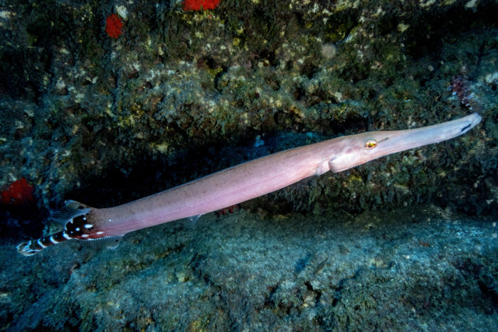
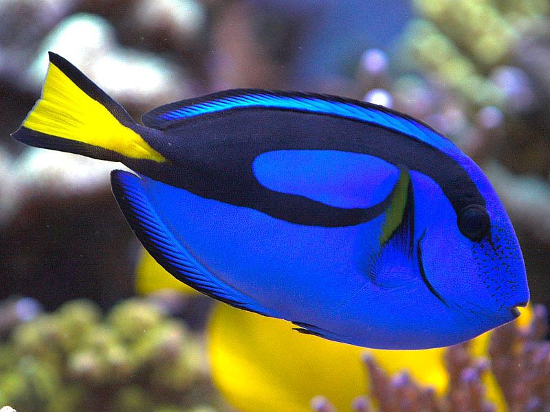
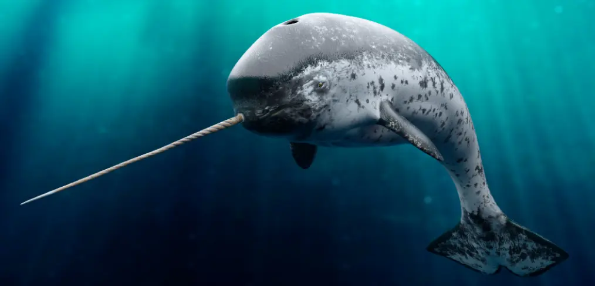
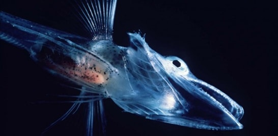

Encontra-se em todos os oceanos do planeta, a IUCN afirma que a B. m. Está ausente apenas em alguns mares regionais, como o Mar Mediterrâneo, Mar de Okhotsk e o Mar de Bering”.

O corpo da baleia-azul é longo e hidrodinâmico. Tem coloração azul-acinzentada e manchas claras que são únicas para cada animal e podem ser usadas para a identificação. O ventre do corpo é mais claro que o resto do corpo. Além disso, diatomáceas, pequenas plantas ou algas, também são observadas na pele com marcas de baleias e são responsáveis por dar um aspecto marrom a esses animais. A cabeça da baleia-azul, maior de todo o gênero Balaena, é larga e apertada e forma um U. É proporcionalmente menor, equivalente a cerca de um quarto do tamanho do corpo do animal. Da garganta estende-se o sulco da baleia, as pregas que se estendem sob o animal a quase a metade do corpo. As baleias-azuis têm pequenas nadadeiras peitorais. Eles são cerca de 10 % do comprimento total de seu corpo. A nadadeira dorsal da baleia azul é também relativamente pequena.Winvalidertil se encontra no quarto posterior do corpo.
Esse peixe vive nos recifes de corais em águas rasas e quentes de clima tropical. Ele geralmente se esconde na vertical, camuflado entre as gorgônias. É famoso por caçar em parceria com outros peixes, além de utilizar técnicas de emboscada, permanecendo imóvel. Ainda não se sabe exatamente como se reproduzem ou qual é a época de acasalamento, mas é conhecido que seus ovos são pelágicos, ou seja, flutuam livremente no mar.
Aulostomus strigosus é uma das duas espécies de peixe-trombeta encontrado no Oceano Atlântico, sendo a outra Aulostomus maculatus[1] Ambas as espécies são encontradas no Brasil. Aulostomus strigosus é uma espécie de peixe da família Aulostomidae,é parente próximo dos cavalos marinhos e dragões marinhos.
Solitários e diurnos, camu- flam-se com o ambiente alterando cor e postura: ficam na vertical, cabeça para baixo, imitando gorgônias e/ou acompanham peixes do seu tamanho ou maiores, dessa forma capturam suas presas desprevenidas. As presas são sugadas rapidamente com ajuda do seu pecu- liar aparato bucal.
Vive em águas transparentes, em zonas de corrente, adjacentes ao recife de coral. São encontrados ao longo do Indo-Pacífico. Pode ser visto nos recifes do Leste da África, Japão, Samoa, Nova Caledônia, e na Grande Barreira de Coral. Formam pequenos agregados, 1 a 2 metros acima do fundo. Os juvenis e sub-adultos vivem em grupos junto ao coral arborescente Pocillopora eydouxi e quando necessário escondem-se, apertando-se entre os ramos do coral.
Paracanthurus hepatus, conhecido como cirurgião-patela, é um peixe de tamanho médio, colorido e que vive em recifes. Pertence à família Acanthuridae, sendo o único membro do gênero Paracanthurus. É popular entre os peixes de aquário, sendo muito conhecido por ser a personagem Dory dos filmes Procurando Nemo e Procurando Dory, da Pixar.
Tem a pele dura, composta por pequenas escamas de cor azul "Royal" no dorso, amarelas na cauda. Possui um ou mais pares de afiadas lâminas na base da barbatana caudal, que são utilizadas em situações de defesa e ataque. Possui uma forma hidrodinâmica. Crescem até aos 31 centímetros.
O narval ou unicórnio-do-mar é uma baleia dentada de tamanho médio e o animal com os maiores caninos. Vive durante todo o ano no Ártico. É uma das três espécies vivas de baleias da família Monodontidae, juntamente com a baleia beluga e o Golfinho-do-irauádi. Os narvais machos são distinguidos por uma presa helicoidal longa e reta que, na verdade, é um canino superior esquerdo alongado. Vale ressaltar que aproximadamente 15% das fêmeas também desenvolvem essa presa. Encontrados principalmente no Norte do Canadá e águas da Gronelândia, raramente ao sul de 65° N de latitude, os narvais são predadores do ártico excepcionalmente especializados. Formam pequenos agregados, 1 a 2 metros acima do fundo. Os juvenis e sub-adultos vivem em grupos junto ao coral arborescente Pocillopora eydouxi e quando necessário escondem-se, apertando-se entre os ramos do coral.
O narval foi uma das muitas espécies originalmente descritas por Linnaeus na obra Systema Naturae.[5] O nome deriva da palavra nórdica antiga nár, que significa "cadáver", em referência à pigmentação acinzentada do animal, em alusão à cor de um marinheiro afogado, e ao seu hábito em época de verão de postura inerte ou perto da superfície do mar (chamada "corte"). O nome científico do narval, Monodon monoceros deriva grego: "um-dente / um-chifre" ou "unicórnio dentado".
Tem a pele dura, composta por pequenas escamas de cor azul "Royal" no dorso, amarelas na cauda. Possui um ou mais pares de afiadas lâminas na base da barbatana caudal, que são utilizadas em situações de defesa e ataque. Possui uma forma hidrodinâmica. Crescem até aos 31 centímetros.
Este animal, que vive a cerca de 975 metros de profundidade das águas frias e escuras em torno da Antárctica, pode parecer um peixe comum à primeira vista, mas faltam-lhe duas características que a maioria dos outros peixes têm: hemoglobina e escamas.
Channichthyidae é uma família de peixes, perciformes, da subordem Notothenioidei, comummente conhecidos como peixes-gelo.
O nome comum destes peixes fica-se a dever à ausência de glóbulos vermelhos no sangue, o que lhes dá uma feição translúcida, que lembra gelo. É possível, segundo o que alguns especulam, que o coração anormalmente grande do animal ajude a transportar o oxigénio no corpo, usando para isso o plasma do sangue em vez da hemoglobina. Além disso, não tendo escamas, o peixe consegue absorver algum oxigénio directamente através da pele – as frias águas polares são mais ricas em oxigénio do que as águas mais quentes.